Java Editor
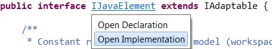
The hyperlink popup shows up when you hold Ctrl (on the Mac: Command), unless you've changed the modifier on the Hyperlinking preference page.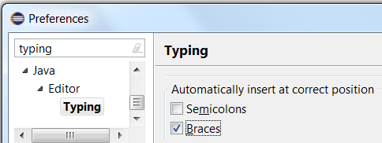
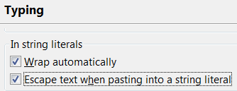
To paste without escaping, you can either paste outside of a string literal, or you can disable Edit menu > Smart Insert Mode.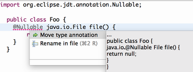
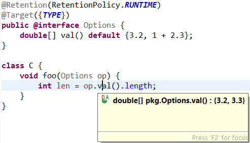
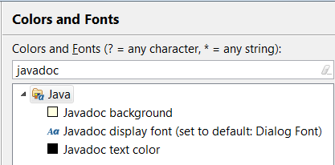
Before:
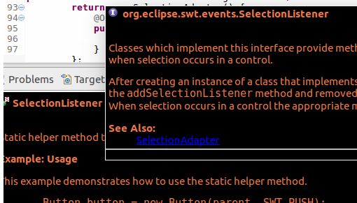
After:
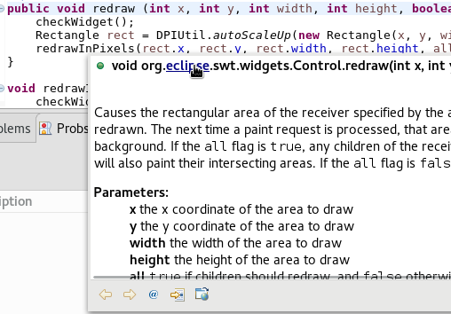
Dark theme support:
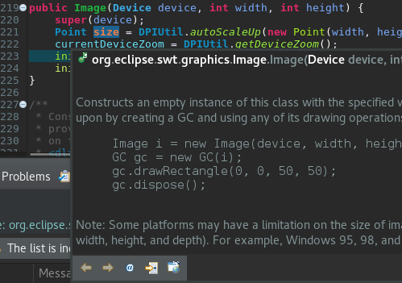
Java Views and Dialogs
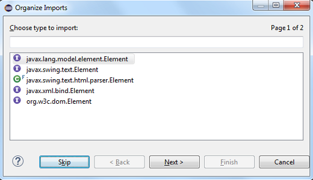
java.lang.Object
in the Quick Outline (Ctrl+O) by using the new filter from the drop-down menu (Ctrl+F10):
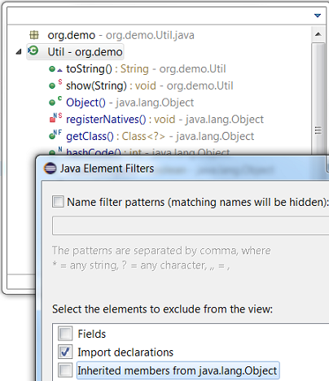
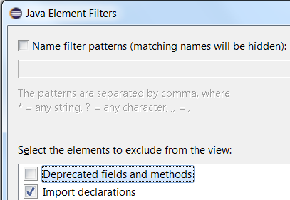
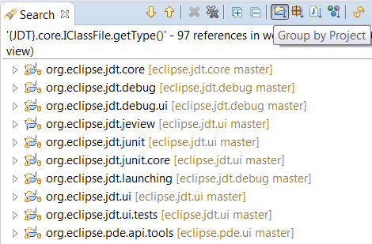
You can use the buttons in the view tool bar to Group by Project, Package, File, or Type..java extension with the type name instead of showing the error message: "Type name must not be qualified".
For example, to create a new class com.test.C1<T>.java, you can directly paste this qualified type name with extension in the Name field of the New Java Class wizard.
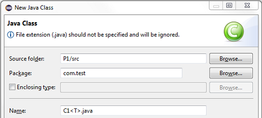
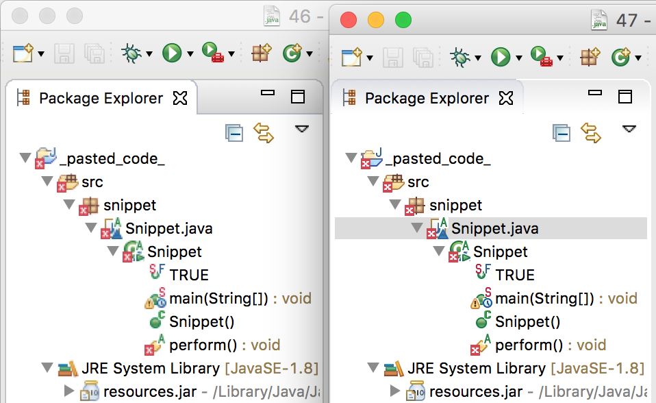
Java Compiler
As a thumb rule, you can try the new indexing to get better performance when there are a large number of Jar dependencies. The new index has been adopted completely in the Type Hierarchy view and partially in some features that use the binary file caching (jars and .class files) such as Package Explorer expansion for jars. It hasn't been adopted by the search features.
You can enable the new index from Preferences > Java:
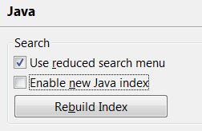
To improve performance, the new index captures a lot of semantic information in an index file separate from the classic index file, consuming additional memory and disk space. The new Rebuild Index button can be used to delete the existing index files - both classic as well as new - then rebuild these index files from scratch. If Enable new Java index option is not checked, only the classic index file will be rebuilt though both will be deleted, thus saving disk space. Also, if index corruption is suspected, Rebuild Index can be used to start from a clean slate again.%variable% syntax in Project > Properties > Java Compiler > Annotation Processing.
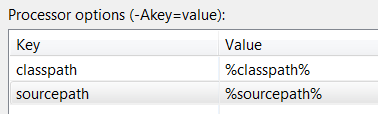
This allows processors to compile Java sources using the Java project's settings without manually maintaining this information in the processor options.
The common reason behind this problem is the fact that not all methods of those collection types make use of generics in the way one might expect.
As a result it is possible to create a Set<Short>, whose add(Short) method will only accept arguments of type Short,
yet method remove(Object) will happily accept literally any argument, because the method's parameter has type Object.
Here is a code snippet that seems to add and remove the same element from the set, but at a closer look the remove call has no effect.
What is difficult to see for the naked eye is now flagged by a new warning:
In a simple world, this would be all there is to say, but over time people have developed various code patterns that rely on these overly general signatures. Consider the following use of subtyping:
Depending on your coding style this may or may not be accepted as a legitimate short hand for:
if (n instanceof Short) set.remove((Short) n);
To reduce the churn caused by the new analysis, we developed some heuristics that filter out cases where types are "sufficiently similar",
so the above goes unwarned.
As with any heuristic, there is no clear line. This implies that the compiler may show "unwanted" warnings,
or filter out invocations that are in fact bugs. For the former case, @SuppressWarnings("unlikely-arg-type")
will document the exception both for the user and for the compiler. For the latter case, we provide an option to tighten
the rules, namely to apply strict type compatibility checks instead of said heuristics. For this extra scrutiny you may enable
the sub-option Perform strict analysis against the expected type in Preferences > Java > Compiler > Errors/Warnings > Potential programming problems.
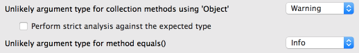
Similarly, a check with default severity "Info" is offered for unlikely invocations ofjava.lang.Object.equals(Object) and
java.util.Objects.equals(Object,Object).
Java Formatter
You can change this option in the Java > Code Style > Formatter preferences in the Comments tab, under Line width.
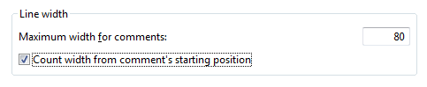
This option allows more space for comments in heavily indented blocks of code and for line comments added to the right of some code. And at the same time, it keeps comments that start at the beginning of the line from getting too wide and uncomfortable to read.Debug

This can be disabled with the new option Preferences > Java > Debug > Show method result after a step operation (if supported by the VM; may be slow)
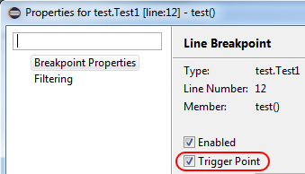
Any breakpoint can be set as a trigger point by using Breakpoint Properties... dialog or the Breakpoints view's detail pane.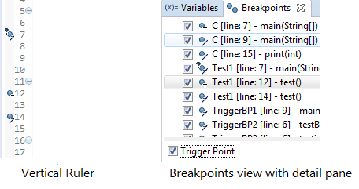
Triggers will be rendered with an overlay of "T" and the breakpoints suppressed by the triggers will be rendered with an overlay of "T" with a cut.All the other breakpoints that are initially suppressed by triggers will be hit only after any of the trigger points has been hit. All the triggers are disabled after a trigger point is hit and will be re-enabled after the run.
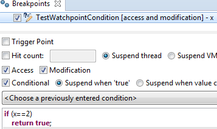

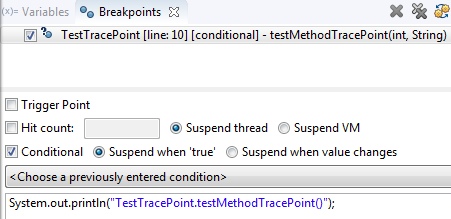
This makes use of another new feature of conditional breakpoints: As long as the condition doesn't explicitly return a booleantrue, the condition is now considered to implicitly return false,
and the breakpoint will not suspend execution.

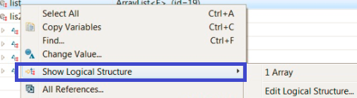
0 for unlimited connections.
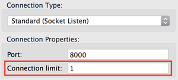

JUnit
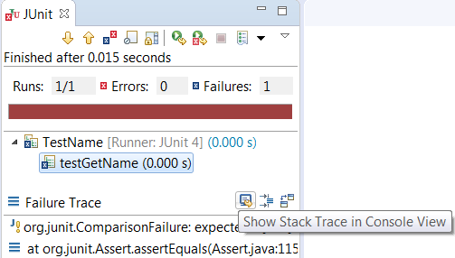